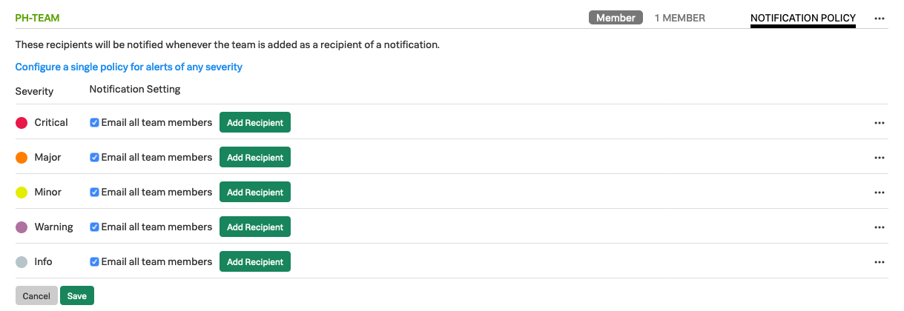

2. Teams
Lab Summary¶
- Create a team and add members to team
- Discover how you can restrict usage for teams by creating separate access token's and set limits.
1. Introduction to Teams¶
To make sure that users directly see the dashboards and alerts that are relevant to them when they login to SignalFX, most organizations will use SignalFx's Teams mechanism to assign a user to a Team. Usually this matches work related roles, for example, members of a Dev-ops or Product Management group would be assigned to the corresponding Teams in SignalFx.
Once an Team member is connected to SignalFx, they will be shown the Teams landing page, similar to the one shown below, In this case for the Product Management team. Here, members see all the Dashboard, alerts that are assigned the team and any other useful information so they can focus on what is relevant to their job.

The above landing page has three Dashboard groups assigned, shows there is a critical alert that had this team as an adressee and some text and urls with other topics of interest.
2. Creating a new Team¶
To work with to signalFx's Team UI click on the settings  ) icon on the right top of the page and select the Organizations Settings → Teams tab, or select the Teams tab from the left pane.
) icon on the right top of the page and select the Organizations Settings → Teams tab, or select the Teams tab from the left pane.

When the Team UI is selected you will be presented in the workshop with an empty Team's list

To add a new Team click on the green  button. This will present youy with the Create New Team Dialog.
button. This will present youy with the Create New Team Dialog.

Create your own team by naming it [YOUR-INITIALS]-Team and add yourself by searching for your name and selecting the Add link behind your name. This should result in a dialog similar to the one below:
You can remove selected users by pressing remove or the small x behind a name. Make sure you have your group created with your initials and with yourself added as a member, then press done.

This will bring you back to the Teams list that now show your Team and the one's created by others.
Note that the group(s) you are a member of has a gray Member icon in front of it.
If no members are assigned to your group, you should see a blue Add members link instead of the member count,
clicking on that link will get you to the Edit Team dialog where you can add yourself.
This is the same dialog you get when pressing the 3 dots ... at the end of the Line with your team
and select Edit Team.
The 3 ... menu give you the option to Edit a Team, Join or leave a Team or Delete a team.
3. Adding Notification Rules to a Team¶
You can set up specific Notification rules per team, click on the NOTIFICATION POLICY Button, this will open the notification edit menu.

By default the system offers you the ability to set up a general notification rule for your team. Note the Email all members, This mean all members of this team will receive an email with the Alert information, regardless of the alert type. You can add other recipients, by clicking 
You can add a different email addresses to inform people outside SignalFx users like alerts@your-company.com if that is way to inform people outside SignalFx. AAdding groups you would use when you also want to send an alert to an other team, like sending an alert on the Database of your application to the general Database team along with one to your team.
However if you click on the link Configure separate notification tiers for different severity alerts you can configure every alert level differently.

As you can see in th above screenshot, you can set up different alert rules for the different alert level. We have different rules set up for all the various Error levels, Showing you how Splunk's VictorOps offering would integrate with SignalFx. Both at a Critical and Major alert, the alert gets forwarded to Splunk's VictorOps that will handle alerting the on call engineer and/or manager. For the Minor alerts we send it to the Teams slack channel and for warning and info messages we just use an email
Below you see some of the Notification options you can install in your SignalFx Organization:

Take a moment to create some notification rules for you Team.
4. Controlling a Team's usage!¶
If you wish to make sure certain teams or users cannot use more then a certain allotment of you overall allotment of nodes, containers and Metrics' you can create multiple Access keys.
To work with SignalFx's Access Tokens UI click on the settings ) icon on the right top of the page and select the Organizations Settings → Access tokens tab, or select the Access Tokens tab from the left pane.

This will open up the Access Token Interface. It consist of a an overview of your Allotments for this organization and a list of Access Tokens that have been generated. Every Organization wil have a Default token that is generated when Organization is created.
Each Token is unique and can be assigned limits for the amount of Nodes,containers Custom Metrics and High Resolution it can use.
The Usage Status Column shows if a token is used above or below its assigned limits.

Let create a new token by clicking on the  button.
This will provide you with the Name Your Access Token dialog.
Enter the new name of the new Token by using your Initials ie. PH-Token
button.
This will provide you with the Name Your Access Token dialog.
Enter the new name of the new Token by using your Initials ie. PH-Token

After you press Ok, you will be taken back to the Access token UI, here your new token should be present, among the ones created by others.

If you have made an error in your naming, want to disable/enable a token or set a Token limit, click on the 3 ... menu button behind a token limit to open the manage token menu.

If you made a type you can use the Rename Token option to correct the name of your token.
If you need to make sure a token cannot be used a to send Metrics in you can Disable a token.
Click on the Disable button to Disable the token, this means the token cannot be used for sending in data to SignalFX.
The line with Your Token should turn greyed out to indicate that is been Disabled as you can see in the screenshot below.

Go ahead and click on the 3 ... menu button to Disable and Enable your token.
Now Lets start limiting usage by clicking on Manage Token Limit in teh 3 ... menu. This will show the Manage Token Limit Dialog:

In this Dialog you can set the limits per category.
Please go ahead and specify the limits as shown above for each usage metric. For our lab use your own email address, and double check if you have the number in you dialog as shown above.
Token limits are used to trigger an alert that notify one or more recipients when the usage has been above 90% of the limit for 5 minutes. To specify the recipients, click Add Recipient, then select the recipient or notification method you want to use. (Specifying recipients is optional but highly recommended.) The severity for token alerts is always Critical.
Click on Update to save your Access Tokens limits and The Alert Settings.
Note
When a token is at or above its limit in a usage category, new metrics for that usage category will not be stored and processed by SignalFx. This will make sure you there will be no unexpected cost due to a team sending in data without restriction.
In your company you would distribute these new Access Tokens to various teams, controlling how much information/data they can send to SignalFx. This will allow you to fine tune the way you consume your SignalFx allotment and stop expensive surprises from happening
Congratulations! You have now have completed the Service Bureau module.